Voici Sakana Fugu. Notre modèle Fugu Ultra égale les performances de Fable et Mythos, offrant des capacités de pointe sans le risque des contrôles à l'exportation. Donc, évidemment, nous avons dû mettre cela à l'épreuve. Vous pouvez voir ici même dans mon code cloud, je tourne sur Fugu Ultra 1 million. Vous pouvez voir que la liste des tâches qui est reportée concerne notre fonctionnalité de tableau de bord et nos visuels.
Interface & Outils : VS Code, Terminal Claude Code
Contenu textuel & Code : `fugu-ultra[1m] with xhigh effort - API Usage Billing`, liste des tâches : inspection, création d'un tableau de bord, vérification.
Action / Démonstration : Exécution d'agents de codage et de tâches de développement via l'interface de Claude Code dans VS Code.
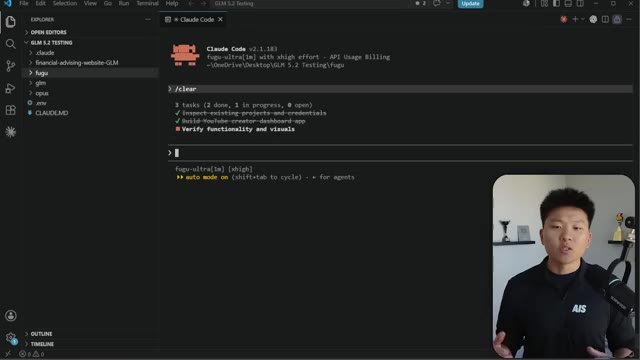
🔍 AgrandirDonc ce que j'ai fait, c'est que je lui ai donné cette invite de commande barre oblique d'objectif, que vous pouvez lire très rapidement si vous le voulez. C'était juste moi, vous savez, en train de parler dans Glido. Et puis, après presque une heure, j'ai récupéré ce tableau de bord, ce qui est honnêtement vraiment impressionnant. Il peut actualiser des données en direct. Si je clique sur ce bouton, vous pouvez voir mes statistiques. Vous pouvez voir le pouls de l'audience. Vous pouvez voir ma distribution des performances, la médiane, les valeurs aberrantes, des trucs comme ça. Je peux voir ce qui fonctionne. Je peux voir ce qui est en hausse. Je peux voir ce qui est sous-performant. Je peux voir des recommandations. Donc non seulement j'obtiens des données réelles sur mon tableau de bord YouTube, mais j'obtiens aussi une analyse par IA. Je peux regarder des vidéos et voir des métriques spécifiques pour chacune. Je peux regarder l'audience et les commentaires. Je peux regarder la stratégie. Et tout cela
Interface & Outils : Éditeur de code, interface web de tableau de bord
Contenu textuel & Code : Prompt détaillé pour l'agent de codage IA et tableau de bord analytique YouTube avec graphiques de performance
Action / Démonstration : Présentation du prompt initial donné à l'agent IA, puis affichage du résultat final généré (tableau de bord complet).
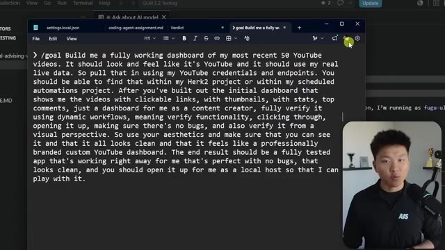
🔍 Agrandir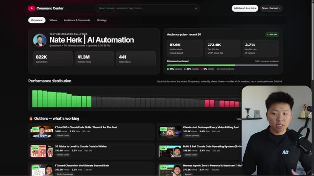
🔍 Agrandirétait un prompt unique de type "slash goal" avec Fugu Ultra. Donc ceci nous est présenté par Sakana.ai, qui est une entreprise japonaise. Sakana signifie poisson, et c'est un peu ce que vous pouvez voir ici. Nous avons un tas de petits poissons qui se rassemblent pour former un plus grand poisson, et c'est fondamentalement ainsi que fonctionne le modèle Fugu. C'est un système multi-agents livré sous la forme d'un seul modèle. Donc en gros, nous avons une seule API à solliciter, et cette API orchestre et achemine vers différents modèles de pointe. Donc Opus, GPT, Gemini, et probablement quelques autres. Fugu atteint des performances supérieures en coordonnant et en orchestrant dynamiquement un
Interface & Outils : Navigateur web (site web de Sakana Fugu)
Contenu textuel & Code : Texte de présentation de Sakana Fugu et schéma d'architecture multi-agent
Action / Démonstration : Navigation sur la page web de présentation de Sakana Fugu par le présentateur
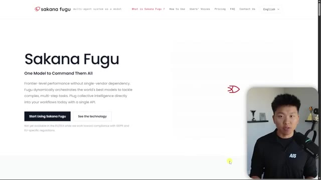
🔍 Agrandir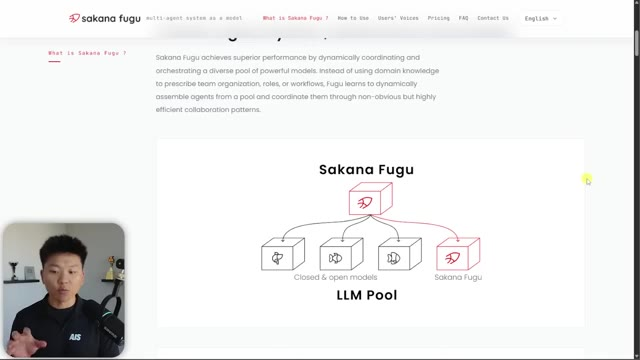
🔍 Agrandirun ensemble diversifié de modèles puissants. Donc honnêtement, ce n'est vraiment rien de nouveau. C'est fondamentalement un agent principal qui orchestre un groupe de sous-agents dotés de modèles différents et de spécialités différentes. Cela fait simplement un bel emballage pour vous. Vous savez, j'ai toujours dit que lorsque vous travaillez avec des modèles d'IA, vous devez toujours penser que chaque IA fait une chose très bien, une chose très spécifique. Et c'est ainsi que vous obtenez d'excellents résultats en enchaînant ces résultats vers le suivant. Et c'est ainsi qu'ils parviennent à atteindre certains de ces critères de référence ici, comme vous pouvez le voir, où nous avons Fugu qui surpasse Fable, qui surpasse GPT 5.5, qui surpasse Opus 4.8, parce qu'il orchestre ces modèles ensemble. Donc, juste pour être clair, Fugu n'est pas son propre
Interface & Outils : Navigateur web affichant le site officiel de Sakana Fugu (système multi-agents).
Contenu textuel & Code : Schémas d'architecture du LLM Pool, descriptions des fonctionnalités de l'API et graphiques de benchmarks de performance comparative.
Action / Démonstration : Présentation des capacités, de l'architecture multi-agents et des performances quantitatives des modèles Fugu par rapport aux modèles du marché.
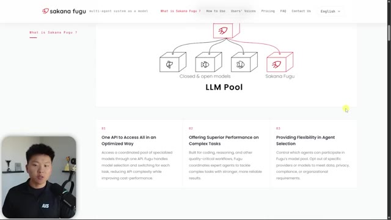
🔍 Agrandir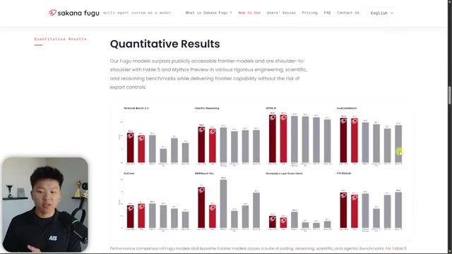
🔍 Agrandir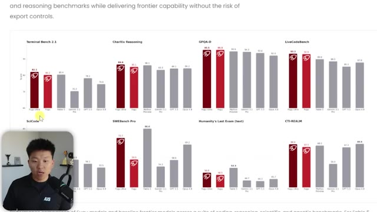
🔍 Agrandirgrand modèle de langage qui est meilleur que Fable. Il est dit qu'ils ont réussi à obtenir de meilleurs résultats que Fable et Mythos Preview sur certains benchmarks en orchestrant des modèles ensemble. Mais ce tweet d'annonce en un jour est devenu hyper viral, donc évidemment nous devions vérifier ça. J'ai donc fini par faire tourner Fugu Ultra contre Claude Opus 4.8 à travers 38 tests différents, et je m'apprête à plonger dans ce que j'ai réellement découvert et la façon dont je ressens la manière dont j'utiliserais ceci et tout le reste.
Interface & Outils : Navigateur web affichant un site de benchmarks et une page explicative sur le fonctionnement de FAGU.
Contenu textuel & Code : Graphiques de performance comparative et schémas d'architecture d'orchestration de modèles d'intelligence artificielle. [DESC_IMAGE_3] Visualisation du workflow d'orchestration de FAGU comparé à un agent unique (soloist).
Action / Démonstration : Explications face caméra et démonstration conceptuelle.
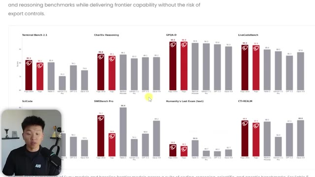
🔍 Agrandir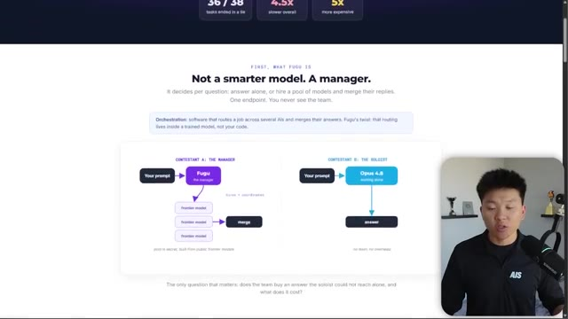
🔍 AgrandirDonc, plongeons-nous directement dans la vidéo d'aujourd'hui. Tout d'abord, oui, j'ai pu utiliser Fugu Ultra dans Cloud Code. Si vous voulez savoir exactement comment, je vais joindre un fichier markdown dans ma communauté Freeschool que vous pourrez donner à Cloud Code, et ensuite tout ce que vous avez à faire, c'est de lui donner ce fichier markdown, de lui donner votre clé API, et vous serez opérationnels. Donc, ma communauté Free School est liée dans la description. Rejoignez la Free School, allez dans la salle de classe, allez dans toutes les ressources YouTube, et vous y trouverez toutes mes ressources gratuitement.
Interface & Outils : VS Code, terminal Claude Code, interface Web Skool (AI Automation Society)
Contenu textuel & Code : "Claude Code v2.1.183 - fugu-ultra[1m] with xhigh effort", commande "/clear" et réponse de l'agent "I'm fugu-ultra, a worker agent within the Fugu orchestration system."
Action / Démonstration : Le présentateur montre l'utilisation de l'agent Fugu Ultra dans Claude Code puis présente la communauté en ligne où se trouve le fichier markdown mentionné.
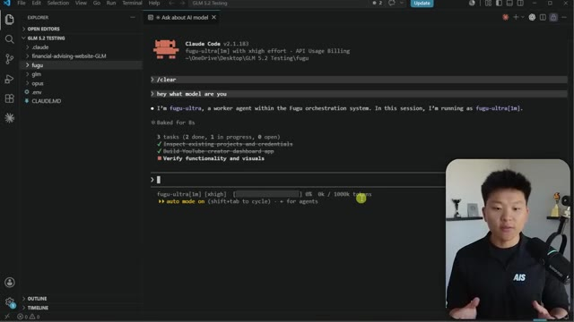
🔍 Agrandir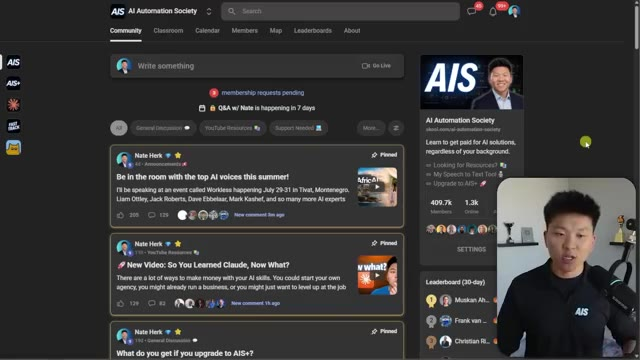
🔍 AgrandirDonc c'était le premier exemple principal que je vous ai montré, n'est-ce pas ? Donc Fugu a construit tout cela, mais il a évidemment utilisé une combinaison de GPT, probablement un petit peu de Gemini pour des questions de design. Il a utilisé GPT 5.5 et peut-être d'autres modèles de pointe à l'intérieur de tout ça. Donc en gros, ce qui se passe, c'est que nous appelons une seule API où nous avons un petit modèle gestionnaire, qui est littéralement entraîné juste pour décomposer une tâche, puis la transmettre à tout un tas de modèles d'IA différents. Nous posons donc la question au chef d'orchestre, et le chef d'orchestre l'externalise à des spécialistes. Donc Claude peut-être pour la rédaction, GPT peut-être pour le code et la correction de bugs, et Gemini pour la recherche et les faits. Et il y a aussi d'autres modèles vers lesquels il délègue en fonction de
Interface & Outils : Page web d'explication de Fugu Ultra et diagramme conceptuel.
Contenu textuel & Code : Schéma illustrant "The Conductor" qui distribue les requêtes utilisateur vers Claude, GPT et Gemini.
Action / Démonstration : Explication visuelle de l'orchestration de plusieurs modèles d'IA par une API unique.
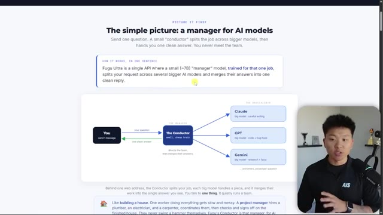
🔍 Agrandir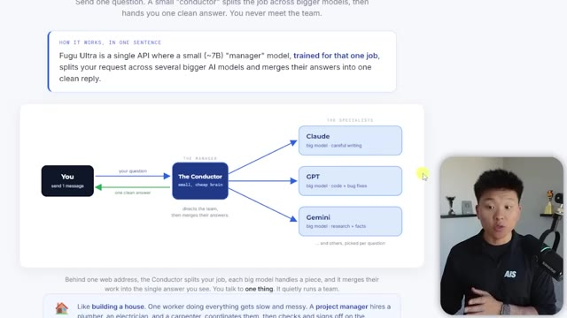
🔍 Agrandirsur la complexité de la tâche. Et tout est une question d'orchestration pour décider qui fait le travail. Du côté gauche du spectre, vous écrivez tout. Vous décidez qui fait quoi. Et à l'extrême droite, vous avez un modèle qui fait tout cela automatiquement. Et le truc intéressant, c'est que ce modèle n'a rien de nouveau. Vous le faites probablement déjà chaque jour sans même vous en rendre compte, ou peut-être vous en rendez-vous compte, mais c'est essentiellement la même façon que Claude Code lance des sous-agents ou des flux de travail dynamiques et sous-traite, découpe un plan et sous-traite des tâches à un travailleur Haiku, ou un travailleur Sonnet, ou peut-être à un groupe de travailleurs Opus supplémentaires.
Interface & Outils : Page web explicative avec diagrammes et infographies
Contenu textuel & Code : Diagrammes conceptuels sur le routage des agents IA ("routing as code", "routing as config", "routing as model") et comparaison entre Claude Code et Fugu Ultra.
Action / Démonstration : Présentation et explication visuelle des différents niveaux d'orchestration et de routage des modèles d'IA par le présentateur.
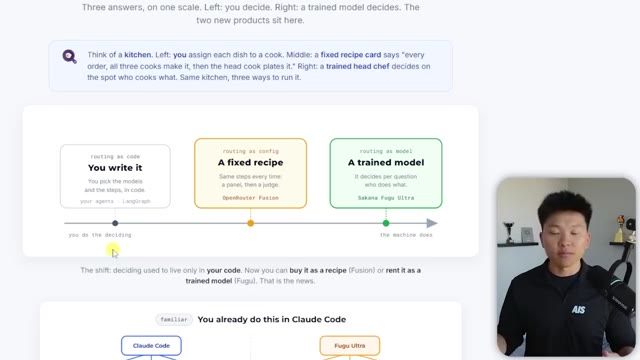
🔍 Agrandir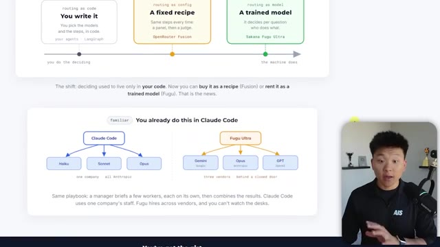
🔍 AgrandirSauf qu'au lieu que Claude Code orchestre entre les modèles Claude, nous avons Fugu Ultra qui orchestre entre différents modèles. Et c'est là que vous pouvez devenir vraiment puissant et avoir une sorte de mélange d'experts ici, car nous savons tous que GPT a des points forts par rapport à Opus et vice versa. Et vous êtes donc capable d'obtenir le meilleur des, j'allais dire des deux mondes, mais le meilleur de tous les mondes parce que Fugu est en quelque sorte entraîné à comprendre quels modèles sont bons en quoi et où déléguer quoi.
Interface & Outils : Page web de présentation avec schéma comparatif et incrustation vidéo du présentateur en bas à droite.
Contenu textuel & Code : Diagrammes d'architecture comparative : "Claude Code" (Haiku, Sonnet, Opus - "one company, all Anthropic") vs "Fugu Ultra" (Gemini, Opus, GPT - "three vendors, behind a closed door"). Texte explicatif sous les schémas.
Action / Démonstration : Le présentateur explique et compare visuellement les architectures d'orchestration de modèles d'IA entre Claude Code et Fugu Ultra.
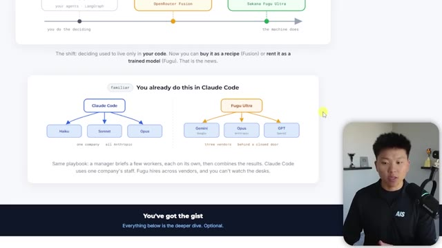
🔍 AgrandirDonc c'est tout ce que c'est. C'est juste une API d'orchestration vraiment intelligente. Ça vous l'emballe joliment. Et donc si beaucoup d'entre vous travaillent déjà avec Codex et Claude Code et d'autres modèles sur une même base de code, c'est fondamentalement ça, sauf que vous en faites un peu moins manuellement. Ça se fait automatiquement, la délégation. Et l'orchestration, c'est vraiment juste deux petites questions. La première question, c'est qui fait chaque partie ?
Interface & Outils : Navigateur web présentant une infographie explicative et une incrustation vidéo.
Contenu textuel & Code : Texte explicatif et diagramme schématique illustrant l'échelle de décision entre le code utilisateur, une recette fixe et un modèle entraîné.
Action / Démonstration : Le présentateur explique les différents modes d'orchestration et de routage des modèles d'IA.
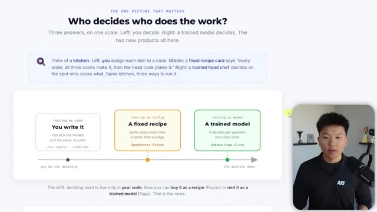
🔍 AgrandirDonc, si nous avons le travail X et que nous avons les tâches A, B et C, peut-être que le modèle A fait la tâche A, peut-être que le modèle B fait la tâche B, et ainsi de suite. Et puis, nous avons aussi la combinaison. Donc, une fois que tous les modèles individuels nous ont donné une sorte de réponse, nous avons besoin évidemment d'un autre LLM pour tout combiner ensemble et ensuite nous présenter cette réponse.
Interface & Outils : Page web de présentation / documentation
Contenu textuel & Code : Texte explicatif sur l'orchestration, définissant deux questions clés : "1. Who does each part?" avec un schéma séparant un travail (the job) entre les modèles A, B et C, et "2. Who combines them?" avec un schéma de fusion des réponses.
Action / Démonstration : Le présentateur explique les concepts d'attribution des tâches aux différents modèles d'IA et de combinaison des résultats.
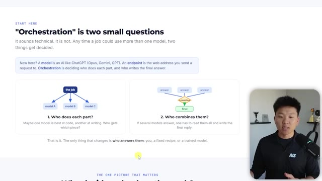
🔍 AgrandirDonc c'est très, très similaire à la façon dont vous travaillez déjà avec vos sous-agents Cloud Code. Maintenant, c'est pratiquement tout. Tout ce code HTML, je vais également l'inclure gratuitement dans ma communauté FreeSchool si vous voulez creuser un peu plus profondément. Oui, j'ai fait construire tout ce HTML par Fugu, juste pour que vous sachiez. Mais voici autre chose qui est plutôt intéressant. Je me disais, bon, c'est assez similaire à l'API OpenRouter Fusion, si vous avez vu quand elle est sortie l'autre semaine.
Interface & Outils : Navigateur web affichant une page explicative sur l'orchestration de modèles IA.
Contenu textuel & Code : Schémas textuels et graphiques expliquant l'orchestration, les rôles des modèles (prompt, judge, model A/B/C) et les méthodes d'envoi.
Action / Démonstration : Présentation et défilement d'une page web explicative sur les architectures d'agents et de modèles d'IA multiples.
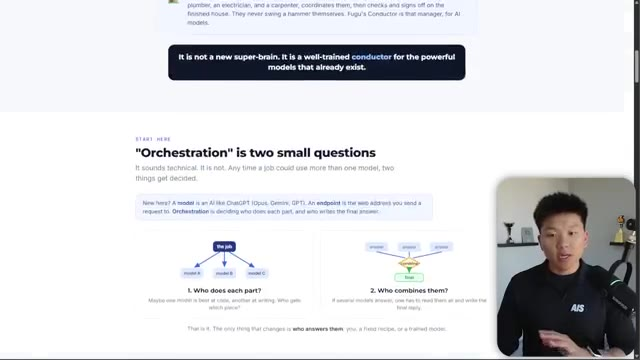
🔍 Agrandir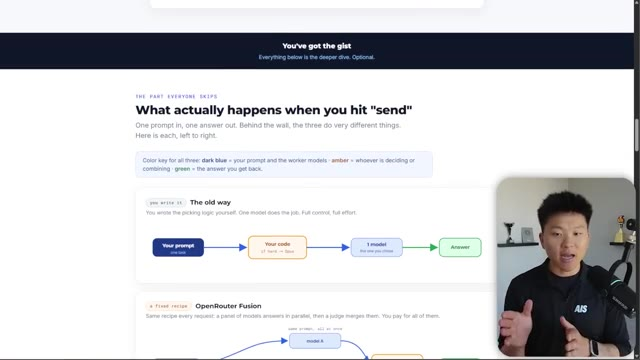
🔍 Agrandir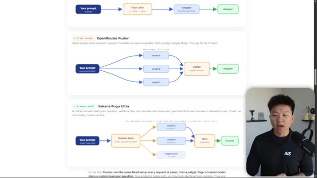
🔍 AgrandirMais c'est en fait différent parce que l'API Fusion, ce qu'elle fait, c'est qu'elle envoie vos requêtes à trois modèles en même temps. Donc elle ne décompose pas la tâche et ne délègue pas. Elle dit simplement, hé, vous trois, répondez à ceci. Et ensuite, cela revient avec un juge qui fusionne les trois. Et cela seul a également montré qu'il améliorait les résultats et la qualité que vous obtenez. Donc la morale de l'histoire, c'est que lorsque vous obtenez différentes perspectives et que vous avez différents grands modèles de langage qui traitent vos données, vous allez probablement obtenir de meilleurs résultats.
Interface & Outils : Navigateur web affichant une page de documentation ou de présentation de schémas d'architecture d'IA.
Contenu textuel & Code : Schémas de flux de données représentant les étapes : Your prompt -> model A, B, C en parallèle -> Judge (merges all three) -> Answer.
Action / Démonstration : Le présentateur explique le schéma et le fonctionnement du système de fusion de modèles d'IA.
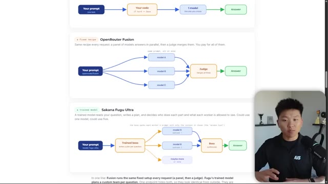
🔍 AgrandirMais quel est le coût de cela, typiquement en termes de vitesse et d'argent réel ? Donc, le coût réel. Et tout cela n'est certainement pas bon marché. J'ai opté pour un forfait à 200 dollars par mois et j'ai rempli ma fenêtre de cinq heures, et j'en suis à 34 % de ma limite hebdomadaire. Maintenant, j'ai fait une mise à niveau vers le milieu du mois, en passant de cent dollars par mois à 200 dollars par mois. Donc, grosso modo, avec le forfait à cent dollars par mois, si j'avais dû remplir trois fenêtres de cinq heures, j'aurais probablement déjà atteint ma limite hebdomadaire.
Interface & Outils : Interface web de sakana.ai (page Billing / Subscription)
Contenu textuel & Code : Détails de l'abonnement à 200 $/mois, limites d'utilisation (Usage limit : 5-hour et Weekly à 34 %), et historique des paiements.
Action / Démonstration : Présentation des coûts de l'abonnement et des quotas d'utilisation de l'outil d'IA par le présentateur.
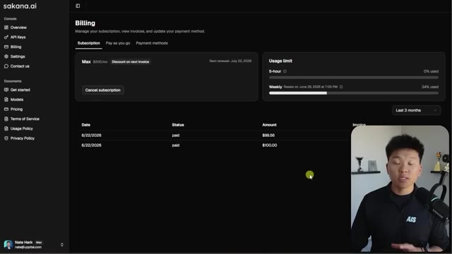
🔍 AgrandirDonc cela s'est rempli très vite, beaucoup plus vite que mon abonnement Cloud Code ne se remplit. Mais si vous voulez commencer, vous allez sur sakana.ai, et ensuite là-bas, vous pouvez vous inscrire pour un compte, vous pouvez souscrire à un abonnement, mais vous pouvez aussi utiliser la facturation par API à l'usage comme vous le voyez ici. Maintenant il y a Fugu, et puis il y a Fugu Ultra. Je n'ai testé qu'avec Fugu Ultra, juste par transparence pour la vidéo d'aujourd'hui.
Interface & Outils : Interface web de la console sakana.ai (section Billing) et incrustation vidéo du présentateur.
Contenu textuel & Code : Tableau de bord de facturation affichant les informations d'abonnement (« Max $200/mo »), les limites d'utilisation (« Usage limit ») et l'historique des paiements.
Action / Démonstration : Navigation et présentation de la page de facturation et de gestion des abonnements sur la plateforme sakana.ai.
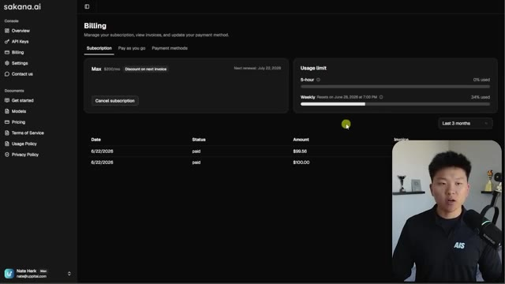
🔍 AgrandirAlors, jetons un œil aux résultats. Ce que j'ai fait ici, c'est que j'ai demandé à Codex de créer un tas de tests juste pour qu'il n'y ait pas de biais, de contamination croisée ou peu importe comment vous voulez appeler ça. Et ensuite, j'ai fait tout cela via la facturation de l'API et j'ai fait passer tous les tests par Opus 4.8 et j'ai fait passer tous les tests par Fugu. Maintenant, gardez à l'esprit qu'Opus 4.8 est l'un des modèles parmi lesquels Fugu choisit. C'est donc vraiment intéressant. Comme quand vous voyez quelque chose comme, vous savez, ceci, que j'ai construit, peut-être que 60 % de ceci a été construit avec Opus 4.8. Et vous savez, ces présentations HTML, celles-ci ont également probablement été construites en majorité par Opus 4.8.
Interface & Outils : Navigateur web affichant une page de résultats de tests de modèles d'IA.
Contenu textuel & Code : Texte et graphiques comparant les performances entre un modèle gestionnaire et Claude Opus 4.8, indiquant 'Test Results', '36 / 38', '4.5x slower overall', '5x more expensive'.
Action / Démonstration : Présentation des résultats comparatifs de tests automatisés entre différents modèles d'IA.
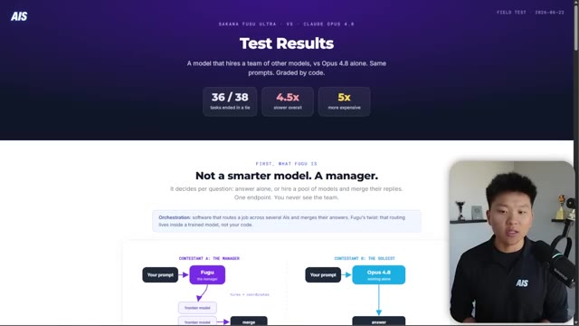
🔍 AgrandirDonc juste quelque chose à garder à l'esprit. Mais dans l'ensemble, nous avons eu 36 des 38 tâches qui se sont soldées par une égalité. Nous avons eu Fugu qui était 4,5 fois plus lent dans l'ensemble et cinq fois plus cher. Donc si vous obtenez à peu près les mêmes résultats, pourquoi voudriez-vous attendre plus longtemps et payer plus ? Vous ne le voulez probablement pas. Et je vais aborder les résultats réels dans une seconde, mais j'étais en train de passer par ici avec mon propre Cloud Code et je faisais tourner Fugu sur une tonne de mes trucs habituels, mes compétences, en faisant des recherches, et il a été capable de les utiliser correctement.
Interface & Outils : Navigateur web (image 1) et VS Code avec terminal intégré (image 2)
Contenu textuel & Code : Statistiques de test (36/38 tasks ended in a tie, 4.5x slower, 5x more expensive) et interface CLI Claude Code avec des commandes et l'état des tâches de fugu-ultra.
Action / Démonstration : Présentation des résultats comparatifs des performances des modèles IA sur le web et démonstration dans l'éditeur de code.
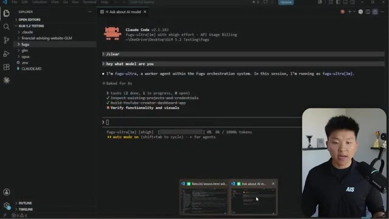
🔍 AgrandirDonc ça fonctionnait très bien dans l'environnement de Cloud Code. C'était juste vraiment lent. L'autre chose, c'est que ça ne remplissait pas la fenêtre de contexte. Donc je pouvais parler pendant, vous savez, 20 ou 30 tours et ça restait à zéro à cause de la façon dont vous jouez un peu avec la manière dont vous acheminez réellement cela vers le serveur de Fugu pour récupérer les réponses. Je ne vais pas entrer dans les détails pour l'instant.
Interface & Outils : Visual Studio Code avec terminal intégré (Claude Code) et encart vidéo du présentateur.
Contenu textuel & Code : Interface de commande Claude Code v2.1.183 avec des prompts, l'état des tâches et l'utilisation de la fenêtre de contexte (0% / 1000k tokens).
Action / Démonstration : Le présentateur explique le fonctionnement de Claude Code et commente l'utilisation de la fenêtre de contexte affichée à l'écran.
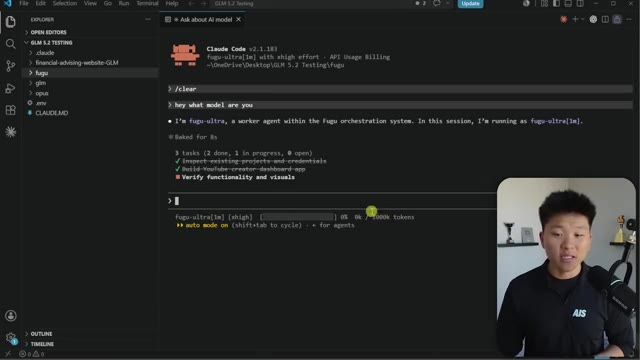
🔍 AgrandirÇa fait partie de ce que ce fichier markdown inclut. Donc juste ici, vous pouvez voir que je me suis penché sur, vous savez, la façon dont cela fonctionne réellement et il y a tout un tas de trucs que ça a créés, mais ce n'est pas aussi simple que la façon dont vous vous connectez à, par exemple, GLM 5.2, où vous changez simplement le point de terminaison et ajoutez votre clé API. C'est juste un peu différent. Donc je ne voulais pas m'attarder là-dessus maintenant, mais le fichier markdown est dans mon school gratuit. Mais bref, le point que j'essayais de faire valoir là, c'est que cela semblait plutôt solide pour mon travail de réflexion.
Interface & Outils : VS Code (éditeur de code) et Claude Code (terminal intégré)
Contenu textuel & Code : Commandes terminal telles que `/clear` et le prompt « hey what model are you », ainsi que la réponse de l'agent (« I'm fugu-ultra, a worker agent... ») et la liste des tâches en cours.
Action / Démonstration : Interaction avec l'agent Claude Code pour vérifier le modèle actif et l'état des tâches du projet.
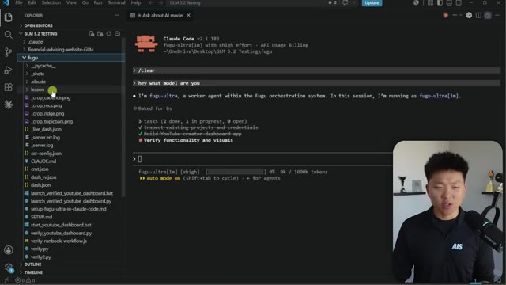
🔍 AgrandirJe veux dire, c'est littéralement 4,8 dans GPT 5,5. Comment ça ne peut pas être solide pour le travail intellectuel ? C'était juste vraiment, vraiment lent. Donc le point que j'essaie de faire ici, c'est que je ne pense pas que je vais utiliser ça. Je vais probablement continuer à le tester un petit peu, mais pour moi, pour mon travail intellectuel, je n'ai pas besoin de ça du tout. Je vais retirer plus de profit de mon abonnement Codeium et de mon abonnement Claude Code, mais je ne fais pas non plus de développement logiciel lourd.
Interface & Outils : VS Code avec Claude Code (CLI)
Contenu textuel & Code : Commandes terminal "/clear", "hey what model are you", réponse de l'agent "fugu-ultra", et liste de tâches (2 terminées, 1 en cours).
Action / Démonstration : Exécution d'une session interactive avec l'agent Claude Code dans le terminal intégré de VS Code.
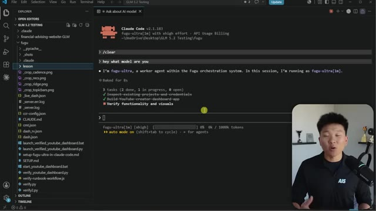
🔍 AgrandirJe ne construis pas de produits. Je ne travaille pas avec des tonnes d'équipes travaillant toutes sur la même base de code. Et si c'était le cas, il y aurait peut-être beaucoup d'avantages à utiliser Fugu parce que vous avez ce réviseur GPT et le planificateur ou créateur d'idées Cloud Code dans une seule et même API. Et je pourrais y voir beaucoup de valeur. Prenez donc cette analyse avec des pincettes.
Interface & Outils : Visual Studio Code, Terminal intégré, Claude Code CLI
Contenu textuel & Code : Commandes terminal "/clear" et "hey what model are you", réponse de l'agent "I'm fugu-ultra, a worker agent within the Fugu orchestration system", liste de tâches avec cases cochées et état du modèle (fugu-ultra[1m] [xhigh]).
Action / Démonstration : Exécution d'une commande dans le terminal Claude Code au sein de VS Code pour interroger l'agent Fugu.
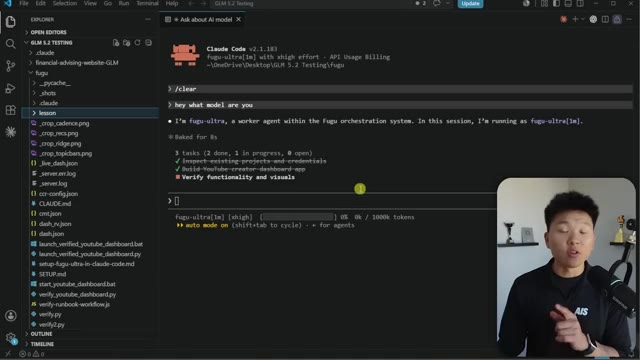
🔍 AgrandirJe n'ai pas poussé cela à travers des tonnes et des tonnes et des tonnes de refactorisations de code et des trucs comme ça. J'ai exécuté un tas d'évaluations créées par l'IA. Donc encore une fois, ce n'est pas un modèle plus intelligent. C'est juste un gestionnaire. Vous pouvez voir ici sur le graphique comment tout cela fonctionne. Nous avons fait 38 tâches réparties sur quatre vagues. Nous avions des puzzles, nous avions des pièges, nous avions des spécifications, nous avions des algorithmes lourds, et ensuite nous avions des codecs qui évaluaient tout cela. Et les deux modèles ont essentiellement reçu les mêmes instructions et les mêmes entrées. Et nous étions simplement en train d'évaluer les sorties. Donc c'est vraiment intéressant, n'est-ce pas ? Globalement, ils faisaient pratiquement toujours égalité. Beaucoup d'entre eux étaient conçus pour être de type réussite ou échec plutôt que d'avoir un score, simplement parce que je voulais rendre cela, espérons-le, aussi objectif que possible, mais ils faisaient pratiquement égalité à chaque
Interface & Outils : Navigateur web affichant une étude comparative de performances d'IA.
Contenu textuel & Code : Graphiques, schémas explicatifs et tableau de scores (38 tâches, vagues, Fugu vs Opus). [DESC_IMAGE_3] Analyse et défilement sur les résultats des différentes vagues de tests.
Action / Démonstration : Explications face caméra et démonstration conceptuelle.
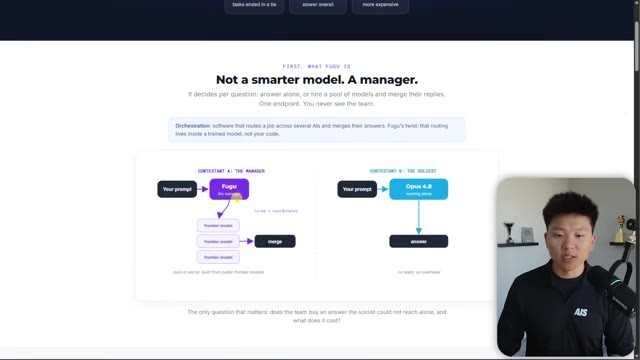
🔍 Agrandir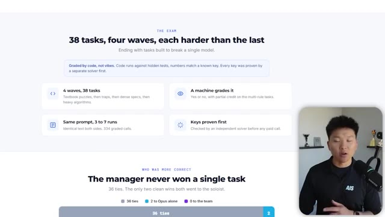
🔍 Agrandir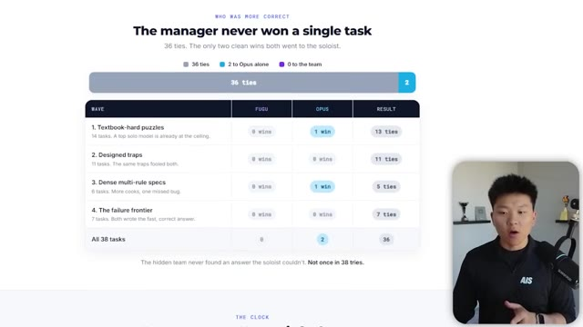
🔍 Agrandirtemps à part pour deux des fois Opus 1, ce qui encore une fois, est intéressant si l'on pense au fait que Opus 4.8 est disponible au sein de Fugu Ultra. Mais ce qui était bien plus intéressant pour moi, c'est le temps que j'ai dû attendre. J'ai donc dû attendre au total pour toutes les exécutions de Fugu, 357 minutes, alors que pour Opus, j'ai attendu au total 80 minutes pour ces 38 tâches différentes. Et ce qui était vraiment intéressant, c'est que certaines d'entre elles, certaines de ces tâches très faciles, Opus y a répondu en environ six secondes, alors que Fugu prenait plusieurs minutes pour cette même chose qui a pris six secondes à Opus.
Interface & Outils : Interface web de benchmark et de comparaison de modèles d'IA.
Contenu textuel & Code : Graphiques de performance, temps d'attente comparés (357 min vs 80 min, facteur 4.5x plus lent) et statistiques de vagues de tests.
Action / Démonstration : Analyse visuelle des temps de calcul et présentation comparative des performances des agents IA.
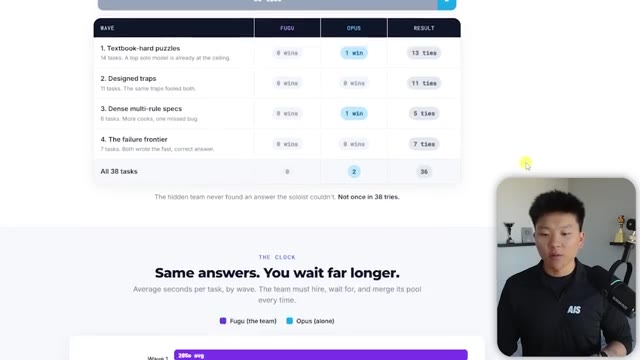
🔍 Agrandir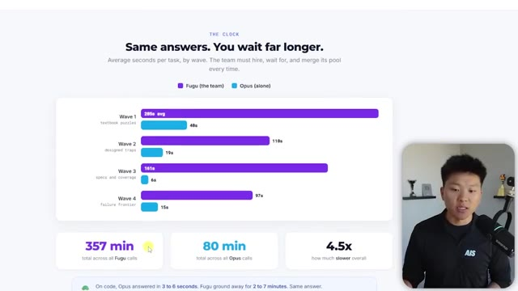
🔍 Agrandir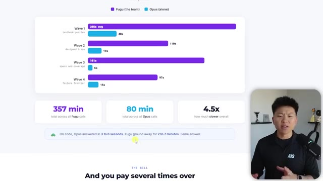
🔍 AgrandirEt puis du côté des coûts, Fugu était très cher. Il faisait tourner, vous savez, Opus et GPT et probablement quelques autres modèles. Et il tournait pendant si longtemps que ça coûtait tout simplement beaucoup plus cher. Sur l'ensemble de ces appels, Opus ne nous a coûté qu'environ 10 dollars, alors que Fugu m'a coûté 50 dollars. Donc environ cinq fois plus cher. Je m'attends définitivement à ce que ce soit plus cher.
Interface & Outils : Tableau de bord web d'analyse de coûts et graphiques statistiques.
Contenu textuel & Code : Graphiques à barres comparant Fugu et Opus (Wave 1 à 4) avec les montants de $53.60 pour Fugu et $10.66 pour Opus.
Action / Démonstration : Présentation comparative des coûts d'API entre les deux modèles d'IA.
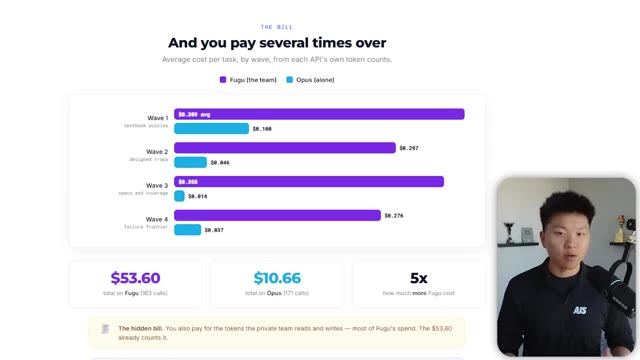
🔍 Agrandir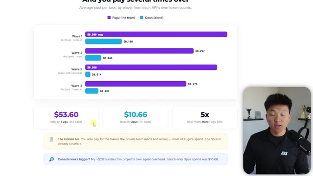
🔍 AgrandirGenre, j'imagine que l'API Fusion d'OpenRouter est aussi plus chère. Je ne m'attendais juste pas à ce qu'elle le soit cinq fois plus. Ou si j'avais ce coût plus élevé, je m'attendais à une meilleure qualité, ce que je n'ai pas ressenti selon mes cas d'utilisation et selon mes expériences. Je voulais donc venir ici et faire cette vidéo parce que quand tu vois un truc comme ça, 15 millions de vues, et que tu vois, hé, ça égale les performances de Fable et Mythos, tout le monde flippe et tout le monde va vouloir essayer.
Interface & Outils : Navigateur web affichant un tableau de bord analytique et un post X (Twitter).
Contenu textuel & Code : Graphiques de coûts comparatifs (Fugu vs Opus), totaux en dollars ($53.60 vs $10.66) et texte de présentation de Sakana Fugu.
Action / Démonstration : Présentation visuelle et analyse comparative des coûts d'API et d'un nouveau modèle d'IA.
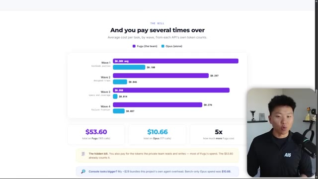
🔍 Agrandir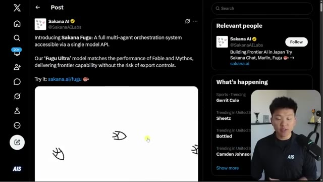
🔍 AgrandirEt donc, évidemment, j'ai voulu l'essayer. Et donc ma conclusion honnête, c'est que pour mes cas d'usage, Fable semblait nettement meilleur qu'Opus 4.8. Mais Fugu Ultra ne semble pas nettement meilleur qu'Opus 4.8. Je pense vraiment que c'est incroyable, ces métriques qu'ils ont réussi à obtenir. Et je pense vraiment que c'est l'avenir, de ne pas s'enfermer avec un seul fournisseur, de comprendre comment jouer avec l'économie unitaire pour comprendre quel est le modèle le moins cher que je peux utiliser pour cette tâche sans sacrifier la qualité.
Interface & Outils : Navigateur web (Réseau social X / Twitter) affichant des graphiques de benchmarks d'IA.
Contenu textuel & Code : Graphiques de performance (LiveCodeBench, GPQA-DI, SWE-bench Pro, etc.) et texte de description du modèle Fugu de Sakana AI.
Action / Démonstration : Navigation et présentation visuelle des graphiques comparatifs des modèles d'IA par le présentateur.
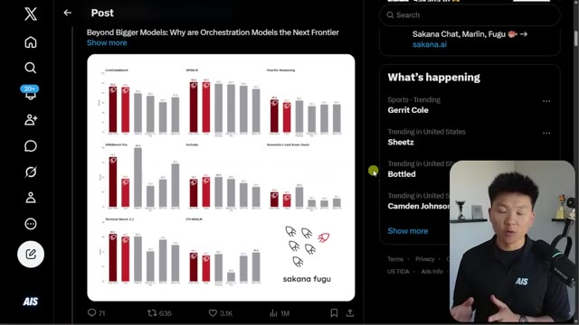
🔍 Agrandir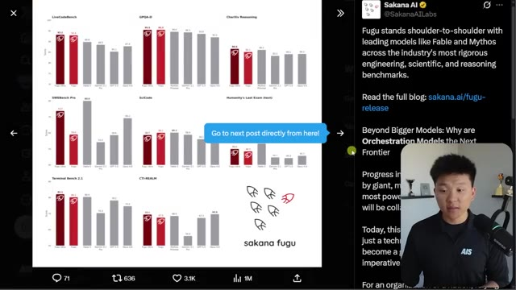
🔍 AgrandirJ'imagine que ce genre de choses va devenir une compétence très, très importante à mesure que nous avançons dans le futur de l'IA. Je pense simplement que ce n'est pas encore la solution pour moi. Je pense qu'ils tiennent quelque chose de génial. Et je pense que, vous savez, OpenRouter a clairement déployé cette API pour une bonne raison, parce que c'est quelque chose que j'essaie de faire manuellement pour moi-même. J'essaie d'utiliser codex et cloud code ensemble tout le temps en fonction de ce que je perçois de leurs forces et de leurs faiblesses. Et songez au fait que lorsque Fable fera son retour, si et quand il fera son retour, et que tous ces modèles commenceront probablement à devenir plus chers, le fait de pouvoir vraiment maîtriser l'optimisation de l'efficacité va
Interface & Outils : Navigateur web (Twitter/X)
Contenu textuel & Code : Publication de Sakana AI présentant le modèle Fugu avec des graphiques de performance sur différents benchmarks d'ingénierie et de raisonnement.
Action / Démonstration : Le présentateur commente les résultats et performances affichés des modèles d'IA.
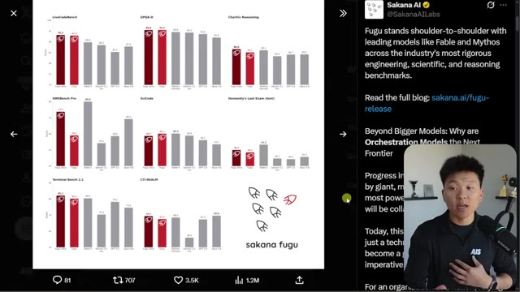
🔍 Agrandirêtre une compétence super importante et une chose super importante à laquelle penser en permanence. C'est donc ce que j'en retiens après avoir testé Fugu sur le terrain. C'est ce que je pense, mais je vais très certainement garder un œil sur Sakana AI labs et sur toute cette idée d'orchestration. Je sais donc que celle-ci était super rapide, mais j'espère que vous avez apprécié ou que vous avez appris quelque chose de nouveau. Et si c'est le cas, s'il vous plaît laissez un like, ça m'aide énormément. N'oubliez pas de rejoindre notre communauté Skool gratuite.
Interface & Outils : Navigateur web (Twitter/X et plateforme communautaire Skool)
Contenu textuel & Code : Graphiques de performance (LiveCodeBench, SWE-bench) et diagramme d'architecture LLM Pool de Sakana Fugu
Action / Démonstration : Navigation et présentation des publications Twitter de Sakana AI sur les modèles d'orchestration.
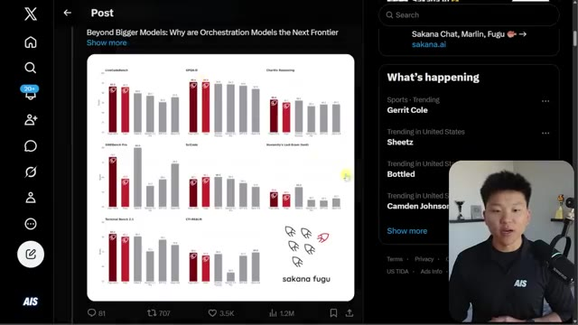
🔍 Agrandir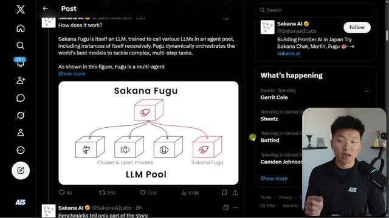
🔍 AgrandirNous dépassons largement les 400 000 membres. Cela a été une aventure formidable et vous pouvez obtenir ici absolument toutes les ressources gratuites jamais publiées. Des dépôts GitHub, des compétences, des fichiers markdown, des guides de ressources, peu importe ce que c'est, prenez-le ici gratuitement. Et c'est tout pour aujourd'hui. Je vous remercie donc d'être arrivés jusqu'à la fin de la vidéo et je vous dis à la prochaine. Merci les amis.
Interface & Outils : Plateforme communautaire Skool (navigateur web).
Contenu textuel & Code : Interface utilisateur affichant : "409.7k Members", "1.3k Online", des annonces de vidéos YouTube ("So You Learned Claude, Now What?"), et un classement des membres.
Action / Démonstration : Navigation et présentation visuelle de l'interface de la communauté pour démontrer l'accès aux ressources gratuites et aux statistiques de croissance.
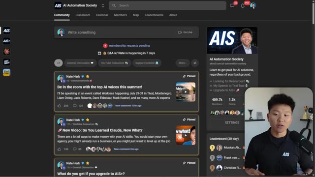
🔍 Agrandir